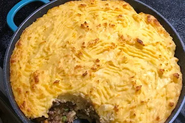

Shepherds Pie

Description
The Best Classic Shepherd’s Pie – AKA Shepards Pie or Cottage Pie. Ground Beef (or lamb) with vegetables in a rich gravy, topped with cheesy mashed potatoes, and baked.
Ingredients
- 1 teaspoon salt, plus more to taste
- 3 large (1 1/2 to 2 pounds) potatoes , peeled and quartered
- 8 tablespoons (1 stick) butter, divided
- 1 medium onion, chopped (about 1 1/2 cups)
- 1 to 2 cups mixed vegetables, such as diced carrots, corn, or peas
- 1 1/2 pounds ground round beef
- 1/2 cup beef broth
- 1 teaspoon Worcestershire sauce
- Pepper and/or other seasonings of choice
Steps
- Boil the potatoes
- Preheat the oven to 400°F.
- Sauté the vegetables
- Add the ground beef, then the Worcestershire sauce and broth
- Mash the cooked potatoes
- Layer the meat mixture and mashed potatoes in a casserole dish
- Bake